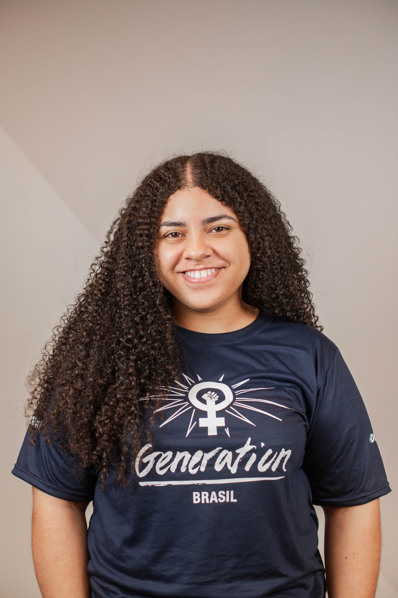

Sou desenvolvedora Back End com mais de quatro anos de experiência em tecnologia, com foco em SQL, Java, Spring Boot e criação de APIs. Atuei em projetos nos setores de e-commerce, hospitalar, seguros e logística, além de trabalhar com governança e migração de dados. Tenho experiência com metodologias ágeis (SCRUM e AGILE), o que me permite atuar de forma colaborativa e eficiente em equipes multidisciplinares. Minha trajetória profissional me proporcionou o desenvolvimento de habilidades analíticas e criativas para solucionar problemas e otimizar processos. Em minha última experiência, fui promovida devido ao meu desempenho e capacidade de entrega de resultados. Além disso, atuei diretamente na migração de dados para SAP S/4HANA e no desenvolvimento de soluções de Governança de Dados, garantindo qualidade e segurança das informações.
Sobre a Thainara Cruz
